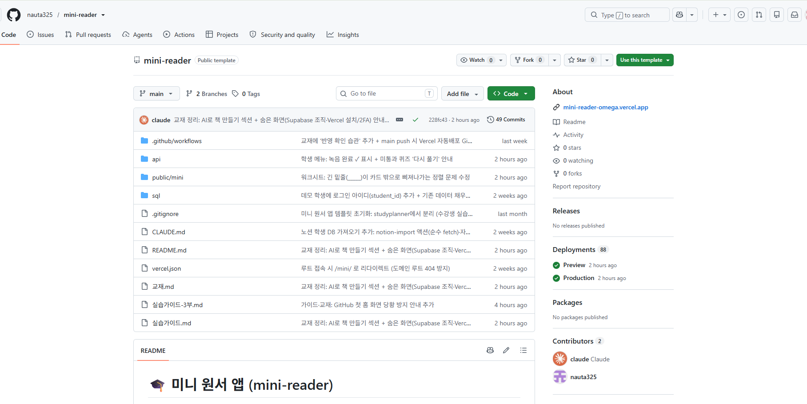
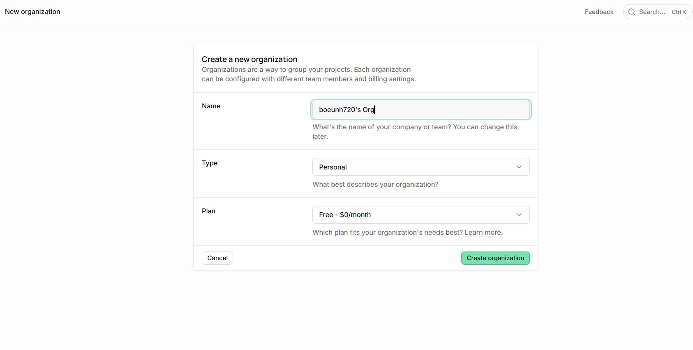
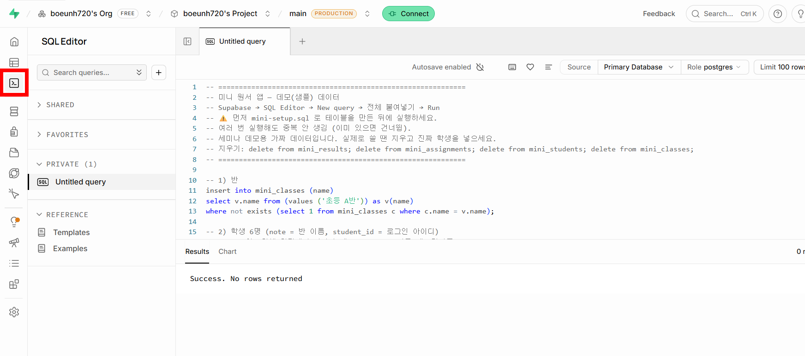
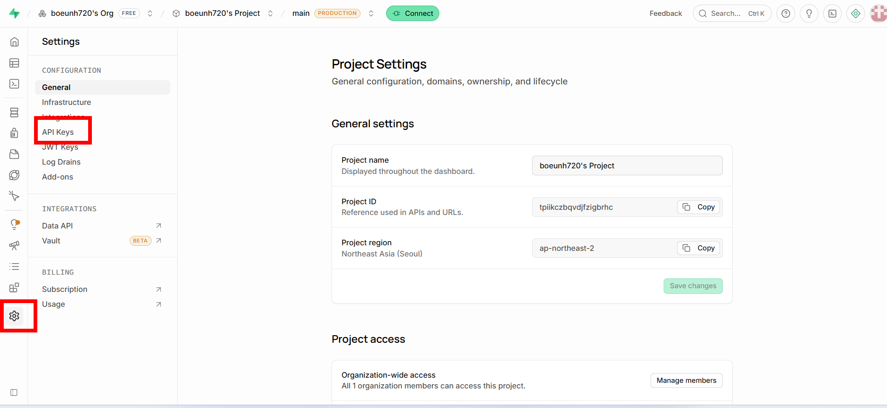
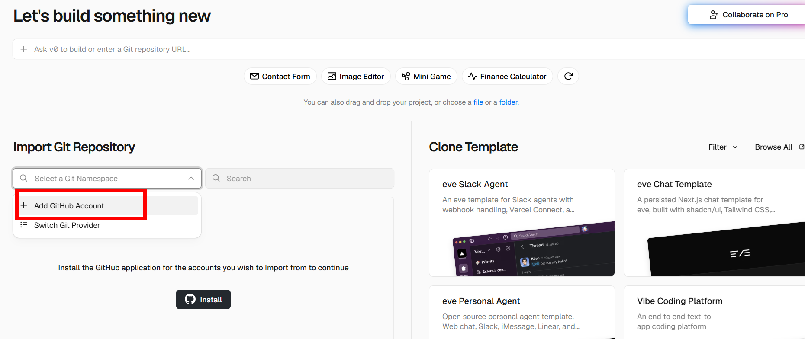
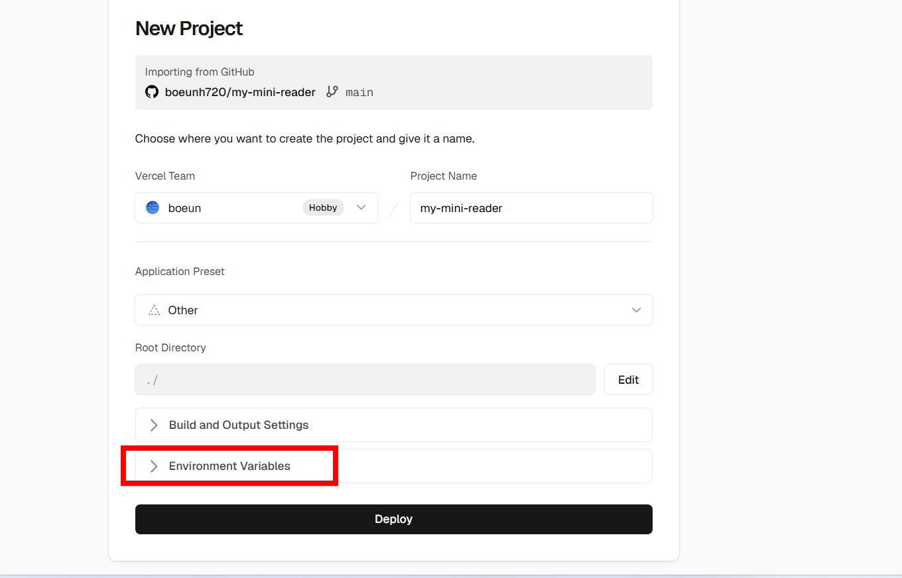
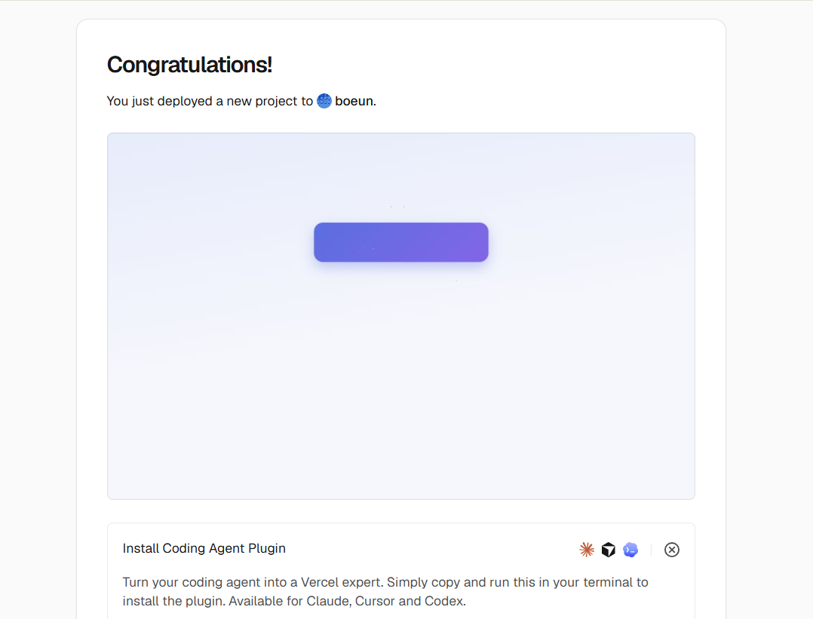

코드를 짜는 법이 아니라, 클로드에게 말해서 코드를 만들고 고치는 법을 배웁니다. 이 파트만 익히면, 원서 시스템이든 내 프로젝트든 다루는 방식은 똑같습니다.
바이브 코딩이란Claude Code핵심 루프잘 말하는 법되돌리기
1.1
바이브 코딩이 뭐예요?
바이브 코딩(vibe coding)은 코드를 한 줄씩 손으로 짜는 대신, AI에게 "이런 걸 만들어 줘 / 이렇게 바꿔 줘"라고 말해서 프로그램을 만드는 방식이에요. 문법을 외울 필요도, 오타를 걱정할 필요도 없어요. 여러분은 무엇을 원하는지만 말하고, 코드는 클로드가 씁니다.
📘 선생님에게 딱 맞는 이유선생님은 이미 "무엇이 필요한지"를 아주 잘 아는 사람이에요. 어떤 화면이, 어떤 기능이 학원에 필요한지 알죠. 바이브 코딩은 바로 그 '무엇'을 말로 옮기는 일이라, 오히려 선생님이 잘합니다.
1.2
📘 무엇을 만들 수 있나
웹페이지·간단한 앱·자동화 도구까지, 브라우저에서 도는 건 거의 다 만들 수 있어요. 이 세미나에서는 두 가지를 합니다 — 먼저 완성된 원서 시스템을 가져와 내 것으로 고치고(2부), 그다음 내 아이디어로 새 프로젝트를 만듭니다(3부).
🗣️ 내가 원하는 걸 말한다
→
🤖 클로드가 코드를 쓴다
→
👀 돌려보고 확인한다
→
🔁 "여기 고쳐줘" 반복
1.3
🖐️ 도구 준비 — Claude Code + Claude 유료 구독 (핵심 준비물)
바이브 코딩을 하려면 클로드에게 말을 걸고, 내 파일을 다루게 해줄 도구가 필요해요. 이 세미나에서는 Claude Code를 씁니다. 그리고 Claude Code를 제대로 쓰려면 Claude 유료 구독이 있어야 해요.
Claude 유료 구독 — claude.ai에서 Pro(또는 상위) 플랜 가입 (세미나 3의 준비물 "Claude 유료 플랜")
Claude Code (웹) — 설치 없이 크롬에서 code.claude.com 접속, 위 계정으로 로그인만 하면 돼요 (터미널·데스크톱 앱 불필요)
노트북 — 크롬 권장. 스마트폰만으로는 실습이 어려워요
⚠️ 헷갈리기 쉬운 두 개의 "Claude" — 꼭 구분하세요① Claude 구독 + Claude Code = 내가 코딩할 때 쓰는 도구 (앱을 만들고 고치는 사람 = 나). ② ANTHROPIC_API_KEY = 원서 앱이 퀴즈를 만들 때 쓰는 열쇠 (2부에서 Vercel에 넣음).
→ 이 둘은 완전히 별개예요. 바이브 코딩 자체에는 ①이 필요하고, 원서 앱의 AI 생성 기능에는 ②가 필요합니다.
1.4
📘 핵심 루프 — 이 네 박자가 전부
바이브 코딩은 결국 같은 사이클의 반복이에요. 원서 시스템을 고칠 때도, 내 프로젝트를 만들 때도 똑같습니다.
① 말하기 (원하는 것)
→
② 돌려보기 (결과 실행)
→
③ 확인 (맞나 본다)
→
④ 고치기 ("여기 이렇게")
한 번에 완벽하지 않아도 괜찮아요. 돌려보고 → 고치고를 몇 번 돌리면 원하는 모습이 됩니다. 이게 코딩을 몰라도 되는 이유예요.
1.5
🗣️ 클로드에게 잘 말하는 법
잘 만드는 사람 = 잘 말하는 사람이에요. 요령은 구체적으로, 하나씩, 결과로. 아래 비교를 보세요.
✗ 애매한 요청
"예쁘게 만들어 줘."
✓ 구체적인 요청
"제목을 가운데로 옮기고, 대표 색을 따뜻한 주황색으로, 버튼을 더 크고 둥글게 해줘."
💡 세 가지만 기억① 구체적으로 — "예쁘게" 말고 "색·크기·위치"로. ② 하나씩 — 한 번에 열 개 말고, 한두 개씩 바꾸고 확인. ③ 결과로 — "이렇게 보이면 좋겠어"라고 원하는 모습을 묘사.
📘 모르면 물어봐도 돼요"이거 어떻게 하는지 모르겠어", "이 화면 뭐가 문제야?"처럼 질문해도 됩니다. 클로드가 설명하고, 방법을 제안해요. 대화하듯 쓰면 됩니다.
1.6
📘 겁내지 마세요 — 언제든 되돌릴 수 있어요
"잘못 건드리면 어쩌지?" 걱정 안 해도 돼요. 두 가지 안전장치가 있어요.
복제본에서 작업 — 2부에서 원본을 그대로 두고 내 복사본을 고칩니다. 원본은 안 망가져요
버전 기록(git) — 저장할 때마다 이전 상태가 기록돼서, 이상하면 "방금 바꾼 거 되돌려줘"라고 하면 됩니다
✓ 되돌리고 싶을 때
"방금 바꾼 것 때문에 화면이 깨졌어. 바로 전 상태로 되돌려줘."
✅ PART 1 요약
바이브 코딩 = 코드를 짜지 않고, 클로드에게 말해서 만들고 고치는 것.
도구는 Claude Code + Claude 유료 구독(내가 코딩할 때). 앱의 API 키와는 별개.
핵심 루프: 말하기 → 돌려보기 → 확인 → 고치기의 반복.
구체적으로·하나씩·결과로 말한다. 모르면 질문한다.
복제본 + 버전 기록 덕에 언제든 되돌릴 수 있다.
PART 2 · 연습
원서 시스템으로 연습 — 받아서 돌려보고 · 수정
빈 화면에서 시작하면 막막해요. 그래서 완성된 원서 시스템을 먼저 받아 돌려보고, 어떻게 생겼는지 뜯어본 뒤, 클로드에게 말해서 우리 학원에 맞게 수정합니다. 1부의 핵심 루프를 진짜 코드에 적용해 보는 파트예요.
코드 받기먼저 돌려보기뜯어보기겉모습·데이터·기능 수정
2.1
📘 왜 남의 완성 코드로 시작하나
처음부터 빈 종이에 만들려면 막막하죠. 하지만 이미 돌아가는 앱을 받아서 고치면 훨씬 쉬워요 — 결과가 눈에 보이니까요. 요리로 치면, 백지에서 레시피를 짜는 게 아니라 완성된 요리를 맛보고 간을 내 입맛에 맞추는 것과 같아요. 이 파트에서 감을 잡으면, 3부에서 내 것을 만들 때 훨씬 수월합니다.
2.2
🖐️ 코드 받아오기 (GitHub)
GitHub은 코드가 보관되는 사이트예요. 강사의 원서 시스템을 내 계정으로 복사해 옵니다.
크롬에서 github.com 접속 → 로그인. (계정이 없으면 우측 위 Sign up → 이메일·비밀번호로 가입)
강사가 알려준 템플릿 저장소 주소를 엽니다 (부록의 링크 / QR)
화면 오른쪽 위 초록색 "Use this template" → "Create a new repository" 클릭 (이 버튼이 안 보이면 그 옆 Fork)
Repository name 칸에 이름 입력(예: my-reader) → 아래 초록 "Create repository" 클릭
주소가 github.com/(내아이디)/my-reader 로 바뀌면 복사 완료 ✅
📘 지금 화면에 보이는 것api·public·sql 같은 폴더들이 보이죠? 이게 앱을 이루는 코드예요(서버 api/mini-reader.js 하나, 화면 public/mini/, 데이터 sql/mini-setup.sql). 지금 열어볼 필요 없어요 — 2.7에서 클로드가 설명해 줘요. 이 저장소는 2.6에서 크롬으로 Claude Code에 연결해 고칩니다.
2.3
🖐️ 먼저 돌려보기 ① — 데이터 창고 만들기 (Supabase)
Supabase는 학생·점수 같은 데이터를 저장하는 데이터 창고(데이터베이스)예요. 창고를 새로 만들고, 앱이 쓸 표를 넣습니다.
A
새 프로젝트(창고) 만들기
크롬에서 supabase.com → 우측 위 Sign in(Continue with GitHub로 하면 GitHub 계정으로 바로 로그인)
New project 클릭 → 조직 선택이 나오면 무료(Free) 조직으로
Name: 아무거나(예: my-reader) · Region: Northeast Asia (Seoul) · Database Password: 정하고 메모
Create new project → 1~2분 기다림(초록불 될 때까지)
B
표 만들기 (SQL 붙여넣고 실행)
왼쪽 사이드바 SQL Editor → New query
내 GitHub 저장소에서 sql/mini-setup.sql 열기 → Raw 버튼 → 전체 선택(Ctrl+A)·복사(Ctrl+C)
Supabase 편집창에 붙여넣기(Ctrl+V) → 우측 아래 Run ▶
아래에 "Success" 뜨면 표(반·학생·책·결과·녹음)와 샘플 책이 한 번에 생성됨 ✅
C
주소·키 복사 (다음 Vercel에서 씀)
Project URL = https://(주소창 project/ 뒤 ID).supabase.co. 왼쪽 Settings → Data API 맨 위에도 떠요.
service_role 키: 왼쪽 Settings → API Keys → service_role(secret) 줄 → Reveal → Copy(⚠️ anon 아님!)
⚠️ service_role 키는 비밀다음 단계에서 Vercel에만 넣습니다. 카톡·화면공유·HTML에 붙여넣지 마세요.
2.4
🖐️ 먼저 돌려보기 ② — 인터넷에 올리기 (Vercel)
Vercel은 코드를 실제 웹사이트로 켜주는 곳이에요. 아까 복사한 주소·키를 여기 넣고 배포합니다.
⭐ 제일 중요 — 환경변수는 "Deploy 누르기 전에"배포한 뒤에 넣으면 다시 배포해야 반영돼서 "왜 안 바뀌지?"로 오래 헤매요. 꼭 Deploy 전에 넣으세요.
크롬에서 vercel.com → Continue with GitHub (GitHub 계정으로 로그인)
우측 위 Add New… → Project
Import Git Repository 목록에서 내 my-reader 옆 Import(안 보이면 Adjust GitHub App Permissions로 접근 허용)
아직 Deploy 누르지 말고, 아래 Environment Variables 펼치기 → 표대로 Key·Value 입력 후 Add (2개)
이제 Deploy → 1~2분 → Congratulations 🎉
Key (이름)
Value (값 — 어디서)
필수
SUPABASE_URL
2.3-C의 Project URL
✅
SUPABASE_SERVICE_KEY
2.3-C의 service_role 키
✅
ANTHROPIC_API_KEY
Claude 콘솔 API 키 — 앱의 AI 생성용 (부록 A+ 발급법)
선택
⚠️ 두 Claude 구분이 ANTHROPIC_API_KEY는 앱이 퀴즈를 만들 때 쓰는 키예요(1.3의 ②). 내가 바이브 코딩할 때 쓰는 Claude Code와는 다릅니다.
2.5
🖐️ 돌아가는 걸 눈으로 보기
Vercel의 Visit 버튼으로 내 사이트를 열고, 주소 끝에 /mini/를 붙이세요 → 내주소.vercel.app/mini/. 빨간 책 홈이 뜨면 성공! 실제로 굴려 보며 "이게 진짜 돌아가는구나"를 느껴 보세요.
/mini/students.html에서 반·학생 만들기
/mini/books.html에서 AI로 생성 — 영어 지문 붙여넣어 단어카드·퀴즈 만들기
학생에게 배정 → 학생 화면(/mini/)에서 단어→녹음→퀴즈 흐름 보기
/mini/report.html에서 학부모 리포트 출력해 보기
2.6
🖐️ 크롬에서 Claude Code 열고 내 저장소 연결
이제 클로드에게 말하려면, 먼저 크롬에서 Claude Code를 열고 내 저장소를 연결해야 해요. 설치도 터미널도 필요 없어요 — 다만 Claude 유료 구독(Pro/Max)이 있어야 열려요(무료 계정은 안 열림).
🔌 처음 여는 사람이 보는 화면 (공식 순서 — 제일 헷갈림)강사·경험자는 이미 연결돼서 이 단계가 안 보여요. 처음 여는 참가자는 이걸 봐요:
code.claude.com 접속 → Claude 계정 로그인
처음이면 화면이 "GitHub 연결"을 요청 → Install the Claude GitHub App(Claude GitHub 앱 설치)
GitHub에서 저장소 접근 허용 — All(전체) 또는 Only select → my-mini-reader만 → Install & Authorize
돌아오면 Default 환경이 자동 생성 → 기본값 그대로
입력창 아래 저장소 선택 → 2.2에서 만든 내 저장소(예: my-mini-reader)
이제 채팅창에 한국어로 말하면 이 코드를 고쳐줘요 (아래부터 그 "말들")
💡 2회차부터 · 막힐 때다음부터는 GitHub 연결·승인 화면이 안 나와요 — 바로 저장소 선택부터. · 🆘 "GitHub 로그인 버튼만 보임" = 아직 연결 전(위 2~3번) · 🆘 "저장소가 안 보임" = 연결한 GitHub 계정이 그 저장소에 접근 권한 있는지 확인(내가 소유했거나 협업자로 초대돼야 목록에 뜸).
📘 왜 저장소를 연결하나요?연결해야 클로드가 바로 그 코드를 읽고 고칠 수 있어요. 프로젝트 하나 = 저장소 하나 = 세션 하나로 짝지으면 깔끔합니다.
2.7
🗣️ 코드 뜯어보기 — 클로드에게 물어보기
고치기 전에, 이 앱이 어떻게 생겼는지 클로드에게 설명을 시켜 보세요. 코드를 직접 읽지 않아도 구조가 잡힙니다.
🗣️ 이렇게 말하기
"이 프로젝트가 어떤 앱인지, 파일들이 각각 무슨 역할을 하는지 쉽게 설명해줘. 내가 학원 선생님이라 코드는 잘 몰라."
🗣️ 더 물어보기
"학원 이름이나 색깔을 바꾸려면 어느 파일을 고쳐야 해?"
2.8
🗣️ 수정 ① — 겉모습 (학원명·색·통과점수)
가장 쉬운 것부터. 아래처럼 말하고, 저장한 뒤 돌려보기로 확인하세요. 한 번에 하나씩!
🗣️ 학원 이름
"리포트와 워크시트에 나오는 학원 이름을 '홍보은영어'로 바꿔줘."
🗣️ 대표 색
"앱 전체 대표 색을 따뜻한 주황색 계열로 바꿔줘."
🗣️ 통과 점수
"퀴즈 통과 점수를 70점에서 75점으로 바꿔줘."
2.9
🗣️ 수정 ② — 목록·데이터 (레벨·시리즈)
🗣️ 레벨 목록
"레벨(단계) 목록을 우리 학원 방식인 '1단계·2단계·3단계·4단계'로 바꿔줘."
🗣️ 시리즈 목록
"원서 시리즈 목록을 'Henry and Mudge, Fancy Nancy, Nate the Great'로 바꿔줘."
2.10
🗣️ 수정 ③ — 기능·AI 출제
🗣️ 문항 수·언어
"AI가 만드는 원서퀴즈2를 5문항으로 늘리고, 3단계 이상 책은 보기까지 전부 영어로 내줘."
💡 조금 더 욕심내도 돼요"현황 화면에 완독 권수 칸을 하나 추가해줘"처럼 기능을 더하는 것도 말로 됩니다. 사서 쓰는 프로그램은 못 하지만, 이건 여러분 것이니까요.
2.11
📘 저장 → 자동 반영
클로드가 고친 내용을 저장(커밋·푸시)하면 GitHub에 올라가고, Vercel이 자동으로 다시 배포합니다. 몇 분 뒤 내 주소를 새로고침하면 바뀐 화면이 보여요. 저장·푸시도 "방금 바꾼 거 저장하고 올려줘"라고 클로드에게 말하면 됩니다.
2.12
🛠 막힐 때
증상
해결
/mini/ 데이터가 안 뜸
Vercel 환경변수(URL·키) 오타 확인 → 재배포
저장·등록이 안 됨
Supabase SQL을 안 돌렸을 가능성 → SQL 다시 실행
"AI로 생성"이 안 됨
ANTHROPIC_API_KEY 없음/잔액 부족 확인
화면이 깨졌다
클로드에게 "방금 바꾼 것 되돌려줘"
뭐가 문제인지 모르겠다
에러 메시지를 복사해 클로드에게 그대로 붙여넣고 물어보기
✅ PART 2 요약
완성된 원서 코드를 내 저장소로 복제해 Claude Code로 연다.
Supabase(데이터)·Vercel(배포)을 붙여 먼저 돌려본다.
고치기 전에 클로드에게 구조를 설명시켜 감을 잡는다.
겉모습→데이터→기능 순으로, 말로 하나씩 수정하고 확인한다.
저장하면 자동 재배포된다. 막히면 에러를 클로드에게 붙여넣는다.
PART 3 · 창작
내 프로젝트 만들기 — 처음부터 끝까지
이제 남의 코드가 아니라 내 아이디어로 만듭니다. 2부는 준비된 원서 템플릿을 가져왔지만, 여기선 GitHub·Claude Code·Supabase·Vercel을 새로 만들어 잇고, 내가 원하는 프로그램을 처음부터 만들어요.
기획새 GitHub 저장소Claude Code 새 채팅새 Supabase·Vercel예시 워크스루
3.1
📘 빈 종이가 두렵지 않은 이유
2부에서 이미 말하기 → 돌려보기 → 고치기를 해봤어요. 내 프로젝트도 완전히 같은 방식입니다. 다른 점은 단 하나 — 시작이 "완성된 앱"이 아니라 "빈 화면"이라는 것뿐이에요. 그마저도 첫 요청 한 번이면 뭔가가 화면에 나타납니다.
3.2
📘 좋은 첫 프로젝트 고르기
작게 — 화면 하나로 끝나는 것부터 (기능 1~2개)
내 학원의 진짜 문제 — 매번 손으로 하던 반복 작업
결과가 눈에 보이는 것 — 표·카드·버튼처럼 화면에 나타나는 것
📘 이런 것들이 좋아요단어 플래시카드 · 출석 체크 보드 · 칭찬 스티커 판 · 수업 타이머 · 오늘의 숙제 게시판 · 간단한 학부모 설문. 오늘은 단어 플래시카드로 사이클 전체를 보여드릴게요.
3.3
🖐️ 새 프로젝트 세팅 — 4개 도구를 처음부터
2부에선 원서 템플릿을 복제해서 GitHub·Supabase·Vercel이 이미 연결돼 있었어요. 내 프로젝트는 그 도구들을 내가 새로 만들어 잇습니다. 순서대로만 하면 어렵지 않아요.
💡 기획
→
🐙 새 GitHub 저장소
→
🤖 Claude Code 새 채팅 + 연결
→
🗄️ 새 Supabase (데이터 필요 시)
→
▲ 새 Vercel 배포
1
기획 — 뭘 만들지 한 장으로 정리
한 문장으로: "○○할 수 있는 웹페이지/앱"
화면: 뭐가 보여야 하나 — 목록·카드·버튼·입력칸?
데이터: 여러 명이 같이 쓰고 기록이 쌓여야 하나? → Supabase 필요 / 나 혼자·그때만? → 필요 없음
💡 기획이 막히면클로드에게 물어봐도 돼요 — "학원에서 ○○가 불편한데, 이런 웹앱 만들면 될까? 어떤 화면이 필요할까?"
2
GitHub — 새 저장소 만들기 (빈 저장소)
github.com → 우측 위 + → New repository
이름 입력(예: my-flashcard), Public, Add a README 체크 → Create repository
2부의 "템플릿 복제"와 달리, 이번엔 텅 빈 내 저장소예요
3
Claude Code — 새 채팅 창 + 이 저장소 연결
크롬에서 code.claude.com → 새 세션을 엽니다 (설치 X)
방금 만든 내 새 저장소를 선택해 연결 (처음이면 GitHub 승인 한 번)
첫 마디: "이 저장소에서 ○○ 웹앱을 만들 거야. 같이 하자."
📘 왜 새 채팅을 여나요?원서 앱 채팅과 섞이면 클로드가 헷갈려요. 프로젝트 = 저장소 = 채팅 하나로 짝지으면 깔끔하고, 클로드가 그 프로젝트에만 집중합니다.
4
Supabase — 새 프로젝트 (데이터가 필요할 때만)
여러 사람의 기록이 쌓여야 하면 → Supabase에 새 프로젝트 (2부와 같은 방법: 프로젝트 생성 → SQL → 키)
클로드에게 "이 앱에 Supabase를 붙여서 ○○를 저장하자" → 필요한 표·연결을 안내해줘요
혼자 쓰거나 기록이 필요 없으면 건너뛰기 — 브라우저 저장으로 충분
5
Vercel — 새 프로젝트로 배포
vercel.com → Add New → Project → 내 새 저장소를 Import
(Supabase를 붙였으면) 환경변수 입력 → Deploy
내 링크 완성 → 학생·학부모에게 공유. 이후 고칠 때마다 자동 재배포
🧭 정리 — 2부와 다른 점은 딱 하나새 프로젝트 = 새 GitHub 저장소 + Claude Code 새 채팅 + (필요 시) 새 Supabase + 새 Vercel. 4개를 새로 잇는 것만 다르고, 만드는 방식(말하기 → 돌려보기 → 고치기)은 2부와 똑같아요.
3.4
📘 제작 사이클
💡 아이디어
→
🗣️ 한 문장으로 설명
→
🤖 만들기
→
👀 돌려보기
→
🔁 고치기
→
🚀 배포
3.5
🖐️ 예시 워크스루 — "우리 학원 단어 플래시카드"
0
아이디어
단어 시험 전에 학생들이 스스로 외울 플래시카드 페이지가 있으면 좋겠다. 앞면은 영어 단어, 누르면 뒤집혀 한글 뜻. 폰으로도 잘 되게.
1
클로드에게 첫 요청
🗣️ 이렇게 말하기
"영어 단어 학습용 플래시카드 웹페이지를 만들어줘. 단어 목록(영어·한글 뜻)을 넣으면, 카드가 한 장씩 보이고 누르면 뒤집혀서 뜻이 나와. '다음' 버튼으로 넘기고, 휴대폰에서도 크게 잘 보이게. 파일 하나로."
클로드가 HTML 파일 하나를 만들어 줄 거예요.
2
돌려보기
🗣️ 이렇게 말하기
"방금 만든 걸 브라우저에서 열어서 보여줘."
화면에 카드가 뜨는지 확인해요. 뭔가 나타나면 절반은 성공 — 이제 고치면 됩니다.
3
고치기 (반복)
마음에 안 드는 부분을 하나씩 말합니다. 매번 돌려보며 확인해요.
🗣️ 섞기
"카드를 무작위 순서로 섞는 '섞기' 버튼을 추가해줘."
🗣️ 모르는 것만 다시
"카드마다 '알아요/모르겠어요' 버튼을 넣고, '모르겠어요'만 모아서 다시 볼 수 있게 해줘."
🗣️ 우리 학원 색
"전체 색을 우리 학원 색인 주황색으로 바꾸고, 카드를 더 둥글고 크게 해줘."
4
(선택) 단어를 쉽게 넣기 · 저장하기
🗣️ 단어 입력
"위쪽에 칸을 만들어서, '영어, 한글' 을 한 줄에 하나씩 붙여넣으면 그 단어들로 카드가 만들어지게 해줘."
🗣️ 이어서 하기
"학생이 껐다 켜도 진도가 남게, 브라우저에 저장해줘. (여러 학생 점수를 모으고 싶으면 나중에 Supabase를 붙이자고 말할게.)"
📘 데이터가 필요해지면혼자 쓰는 저장은 브라우저 저장으로 충분해요. 여러 학생의 기록을 한곳에 모으고 싶어지면, 2부에서 해본 것처럼 Supabase를 붙이면 됩니다 — "이 앱에 Supabase를 붙여서 학생별 점수를 저장하고 싶어"라고 말하면 돼요.
5
배포 — 학생들이 폰으로 쓰게
🗣️ 이렇게 말하기
"이걸 인터넷에 올려서 학생들이 링크로 접속하게 하고 싶어. GitHub에 올리고 Vercel로 배포하는 걸 도와줘."
2부에서 한 배포와 똑같아요. 끝나면 링크가 생기고, 카톡으로 학생들에게 보내면 됩니다.
3.6
🛠 자주 겪는 상황
상황
이렇게
화면이 하얗게 비었다
"화면이 안 나와. 뭐가 문제인지 보고 고쳐줘."
고쳤더니 다른 게 깨졌다
"방금 바꾼 것 되돌리고, 다른 방법으로 해줘."
원하는 모습이 설명이 어렵다
비슷한 걸 예로 들기 — "○○앱처럼 아래에 버튼 두 개"
욕심이 커진다
한 번에 다 말고, 지금 되는 것부터 배포하고 하나씩 추가
3.7
📘 계속 키우기
첫 배포는 끝이 아니라 시작이에요. 쓰다 보면 "여기 이게 있으면" 싶은 게 생겨요. 그때마다 말해서 붙이면 됩니다. 작게 시작해서, 쓰면서 키우는 것 — 이게 바이브 코딩의 진짜 힘이에요.
✅ PART 3 요약
내 프로젝트도 2부와 같은 사이클: 말하기→돌려보기→고치기→배포.
새 프로젝트 = 새 GitHub 저장소 + Claude Code 새 채팅 + (필요 시) Supabase + Vercel을 새로 잇는다.
작게·내 학원 문제·눈에 보이는 것으로 첫 프로젝트를 고른다.
첫 요청 한 번으로 화면을 띄우고, 하나씩 고쳐 완성한다.
데이터가 필요하면 Supabase, 공유하려면 Vercel 배포를 붙인다.
작게 시작해 쓰면서 키운다.
HANDS-ON · 따라하기
처음부터 끝까지 따라하기
영상 없이 혼자서도 할 수 있게 클릭 하나까지 적었습니다. 2부(내 원서 앱 복사·배포)와 3부(내 프로젝트)를 순서대로 따라 하세요.
Use this templateSupabaseVercelClaude Code
🧭 도구 4개, 한 줄로GitHub 코드 창고 · Supabase 데이터 서랍장 · Vercel 인터넷에 켜기 · Claude Code 말로 고치는 AI. 흐름은 늘 GitHub→Vercel→인터넷 주소, 데이터가 필요하면 Supabase 연결.
2-1
내 코드 만들기 — Use this template(복사)
github.com/nauta325/mini-reader 접속
오른쪽 위 초록색 Use this template → Create a new repository
저장소 이름 정하고(예: my-mini-reader) → Create repository
주소가 github.com/(내아이디)/… 로 바뀌면 성공 (히스토리 없는 깨끗한 내 저장소)

▲ 강사 저장소 오른쪽 위 초록색 Use this template
2-2
데이터베이스 — Supabase
🙈 처음 뜨는 낯선 화면 (당황 방지)Continue with GitHub로 로그인 → Authorize Supabase 나오면 Authorize(안전) → Create a new organization 나오면 Type=Personal · Plan=Free, 이름은 아무거나. (결제정보 안 물어봐요.)
supabase.com → New project · Region Seoul · 비밀번호 메모
SQL Editor → New query → 내 저장소 sql/mini-setup.sql 전체 복사(Raw) → 붙여넣고 Run → "Success"
(선택) sql/mini-seed-demo.sql 도 Run → 데모 학생·책이 채워짐
Project URL → Settings → Data API (맨 위) · service_role 키 → Settings → API Keys → service_role 줄 Reveal → Copy

▲ 처음 뜨는 조직 생성: Type=Personal · Plan=Free

▲ SQL Run 후 Success. No rows returned = 성공

▲ ⚙ Settings → API Keys 에서 service_role 키 Reveal → Copy
⚠️ 두 가지만 조심① 꼭 '새' 프로젝트에 (기존 것에 섞으면 나중에 헷갈림). ② 키는 anon 말고 service_role(secret) — 잘못 넣으면 저장·로그인이 안 돼요.
2-3
인터넷에 올리기 — Vercel
⭐ 제일 중요한 함정환경변수(키·주소)는 "Deploy 누르기 전에" 넣으세요. 배포 후에 넣으면 다시 배포해야 반영돼서 "왜 안 바뀌지?"로 오래 헤맵니다.
🙈 처음 뜨는 낯선 화면 (당황 방지)Continue with GitHub 로그인 → Secure Your Account(2FA) 뜨면 Skip securing my account로 넘어가도 됨 · 저장소 목록이 비었으면 Install(GitHub 앱 설치) → 내 계정 선택 (오른쪽 Clone Template 카드는 무시, 왼쪽에서 내 저장소 Import) · 끝에 Install Coding Agent Plugin 카드는 ⊗로 닫기.
vercel.com → Add New → Project → 내 mini-readerImport (목록에 없으면 위 Install)
Deploy 전에 Environment Variables 펼쳐 2개 입력 ↓
Name
Value
필수?
SUPABASE_URL
2-2의 Project URL
✅ 필수
SUPABASE_SERVICE_KEY
2-2의 service_role 키
✅ 필수
ANTHROPIC_API_KEY
내 Anthropic 키
선택 · AI 문제 생성
NOTION_TOKEN
노션 통합 토큰(ntn_…)
선택 · 노션 학생 가져오기

▲ 저장소가 안 보이면 Install(GitHub 앱) · 오른쪽 Clone Template은 무시

▲ Deploy 전에Environment Variables 펼쳐 입력
아래 두 개는 선택 — 안 쓰면 비워도 되고, 나중에 Settings에서 넣고 Redeploy 해도 됩니다
이제 Deploy → "Congratulations 🎉" → Visit

▲ 이 화면이면 배포 성공 (플러그인 카드는 ⊗로 닫기) → Visit
2-4
내 앱 접속
⚠️ 주소 끝에 /mini/앱 화면은 /mini/ 아래에 있어요. https://(내프로젝트).vercel.app/mini/ 로 여세요. (루트로 들어가도 자동으로 넘어갑니다.)
빨간 책 로고 홈이 뜨면 성공. 이 홈은 학생용이에요(가운데 학생 시작하기, 맨 아래 🔑 선생님용 관리 페이지 → /mini/admin.html). 데모를 넣었다면 학생 로그인 테스트: 아이디 seojun / 이름 김서준.
🔒 학생/선생님 화면 분리학생이 성적·다른 학생 정보를 못 보게, 관리는 선생님용 페이지로 따로 들어가요. 선생님용에서 🔐 관리자 비밀번호를 한 번 설정하면, 학생이 주소를 알아도 비밀번호 없이는 못 열려요. (비밀번호는 서버에만 저장 — 코드·주소에 안 보임.)
2-4½
📖 AI로 책 만들기 — 지문만 넣으면 퀴즈 자동 생성
지문(원서 본문)만 있으면 단어카드 + 원서퀴즈 1·2를 AI가 자동으로 만들어 줘요. 직접 문제를 안 짜도 됩니다.
🔑 선생님용 관리 페이지 → 원서 관리 → 🤖 AI로 책 만들기
책 제목 입력 · 시리즈·레벨 선택 · (챕터북이면 챕터 번호, 그림책은 비움)
영어 지문 붙여넣기 — 또는 🎬 유튜브 스크립트로 자동(북마크 드래그 → 유튜브 스크립트 표시 → 클릭 → 새 탭에 제목·지문 자동)
(선택) 읽어주기 영상 URL → 학생 화면에 책 읽어주기 영상
🤖 AI로 생성 & 저장 → "✅ 완성! 단어 N · 원서퀴즈1 N · 원서퀴즈2 N" → 학생에게 배정
⚠️ ANTHROPIC_API_KEY 필요2-3에서 넣은 그 키가 있어야 해요. 원서퀴즈1이 0개면 지문이 너무 짧은 경우 → 지문을 더 넣고 다시 생성(그림책은 퀴즈가 하나만 나올 수 있음). 챕터북은 챕터마다 따로(생성 후 챕터 자동 +1).
2-5
말로 내 취향대로 고치기 — 첫 바이브 코딩
A. Claude Code 열고 내 저장소 연결 (크롬, 설치 X) — code.claude.com → 새 세션 → (처음이면 GitHub 승인) → (내아이디)/mini-reader 선택해 연결. 이제 채팅창에 한국어로 말하면 돼요.
B. 이제 내 학원·취향대로 꾸미기 — 아래처럼 한 국어로, 하나씩 말하면 됩니다:
🎨 디자인
"대표 색을 우리 학원 색으로 바꿔줘" "홈 화면 제목을 '○○영어 원서방'으로" "글자를 더 크고 동글동글 귀엽게" "학생 화면에 로고 이모지(📚🌱) 넣어줘"
🏫 학원 정보
"리포트·워크시트 학원 이름을 '○○영어'로" "워크시트 맨 위에 학원 이름·전화번호 넣어줘"
⚙️ 학습 설정
"통과 점수를 80점으로" "레벨 목록을 우리 단계(씨앗·새싹·나무)로" "시리즈 목록을 우리 책들로"
✨ 문구·기능
"통과하면 '참 잘했어요!' 크게 축하해줘" "학생 화면에 오늘 읽은 책 수 보여줘"
⚠️ 한 번에 하나씩!여러 개를 한꺼번에 시키면 꼬여요. 하나 바꾸고 → 확인 → 다음 순서로 하세요.
저장(push)하면 Vercel이 자동 배포 → 잠시 후 강력 새로고침(Ctrl/Cmd+Shift+R)하면 반영돼요.
🔁 반영 확인 습관 (꼭!)고친 게 사이트에 자동으로 바로 안 뜰 수도 있어요. 매번 ① Vercel → Deployments에 새 배포가 도는지 확인 → 안 돌면 ② ⋯ → Redeploy(=반영 확정 버튼) → ③ 강력 새로고침 → ④ 그래도면 보는 주소가 내 프로젝트 맞는지. (GitHub Pages는 늘 자동, Vercel은 누가 올렸느냐에 따라 다름.)
3-0
내 프로젝트 — 마음가짐
🌱 작게 시작가장 작은 버전(MVP) 먼저. 한 화면·한 기능. "오늘은 이것 하나만 되면 성공." 완벽하게 말고 일단 되게 → 말로 키우기.
3-1
기획 (종이 5분)
# 빈칸을 채우면 클로드에게 줄 설계도
· 앱 이름:
· 한 줄 설명: (누가 / 무엇을 / 하는 앱)
· 쓰는 사람:
· 첫 화면에 뭐가 보이나:
· 저장할 것(데이터):
· 오늘의 첫 목표(이것만 되면 성공):
github.com → + → New repository → 이름 · Public · ☑ Add a README → Create
Claude Code 새 채팅 → 그 저장소 연결 → 아래처럼 첫 지시 ↓
아래 기획으로 웹앱을 만들어줘.
[3-1 기획서 붙여넣기]
구조는 mini-reader 처럼 아주 단순하게:
- 화면은 public 폴더에 HTML로 (빌드·프레임워크 없이)
- 서버가 필요하면 api 파일 하나로 (순수 fetch)
- 데이터는 Supabase에 저장 (필요하면 SQL도 같이 줘)
- 키·비밀값은 HTML에 넣지 말고 환경변수로
일단 '오늘의 첫 목표' 기능 하나만 되게 가장 작게 만들어줘.
3-3
Supabase · Vercel (데이터 쓰면) · 성공 기준
Supabase 새 프로젝트 → 클로드가 준 SQL Run → URL·service_role 키 복사
Vercel Import → Deploy 전에 환경변수 → Deploy → Visit
주소가 헷갈리면 클로드에게 "메인 주소가 뭐야?"
내 앱이 인터넷 주소로 열린다
첫 목표 기능 하나가 동작한다
클로드에게 한 가지를 말해서 바꿔봤다
F
자주 막히는 곳
증상
해결
루트에서 404
주소 끝에 /mini/ 붙이기
undefined/rest/v1…
SUPABASE_URL 오타/누락 → 고치고 Redeploy
column … does not exist
세팅 SQL을 끝까지 실행 안 함 → 전체 다시 Run
PGRST204 schema cache
Supabase Settings→General→Restart project
저장·로그인 안 됨
키가 anon일 수 있음 → service_role로 교체
고쳤는데 그대로
① Redeploy 했나 ② 강력 새로고침 ③ 보는 주소가 내 프로젝트 맞나
G
용어 사전
말
뜻
Use this template
템플릿 저장소를 내 계정으로 깨끗이 복사 (커밋 히스토리 없음)
배포(Deploy)
코드를 실제 웹사이트로 켜기
환경변수
키·주소를 코드 밖(서버)에 안전하게 두는 칸
SQL
데이터베이스에 "표 만들어/넣어" 시키는 명령
service_role 키
DB를 마음대로 읽고 쓰는 비밀 열쇠 (서버 전용)
강력 새로고침
캐시 버리고 새로 불러오기 (Ctrl/Cmd+Shift+R)
📎 참고이 따라하기는 원본 저장소의 교재.md·실습가이드.md와 같은 내용이에요. "Use this template"로 복사하면 그 파일들이 내 저장소에 그대로 남아 언제든 볼 수 있어요.
APPENDIX · 부록
빠르게 찾아보는 자료
준비물, 자주 쓰는 프롬프트, 원서 시스템 설정, 배포 정보를 한곳에 모았습니다.
A
바이브 코딩 준비물 (내가 코딩할 때)
Claude 유료 구독 — claude.ai에서 Pro(또는 상위) 가입
Claude Code (웹) — 설치 없이 크롬에서 code.claude.com 접속·로그인 (터미널 불필요)
노트북 + 크롬 — 폰만으로는 어려움
GitHub 계정 — 코드 저장·복제·배포 연결용
🔑 미리 만들 건 GitHub 하나뿐Supabase·Vercel은 수업 중 각 사이트에서 "Continue with GitHub"을 누르면 그 자리에서 바로 가입돼요(미리 안 만들어도 OK).
⚠️ 앱의 AI 생성용 키는 별개원서 앱이 퀴즈를 만들려면 ANTHROPIC_API_KEY(Claude 콘솔 발급)가 따로 필요해요. 이건 Vercel 환경변수에 넣습니다 — 내 코딩용 구독과 혼동하지 마세요.
A+
Anthropic API 키 발급 (AI 자동생성용)
💡 이게 뭔가지문을 넣으면 AI가 단어·퀴즈를 자동 생성해요 — 그 기능만 ANTHROPIC_API_KEY가 필요. Claude 구독과 별개이고 쓴 만큼 요금(제일 싼 Haiku라 몇 달러). 2차 세미나 때 받았으면 그 키 재사용, 못 찾으면 새로 하나 더 만들면 돼요(결제수단 이미 있어 바로).